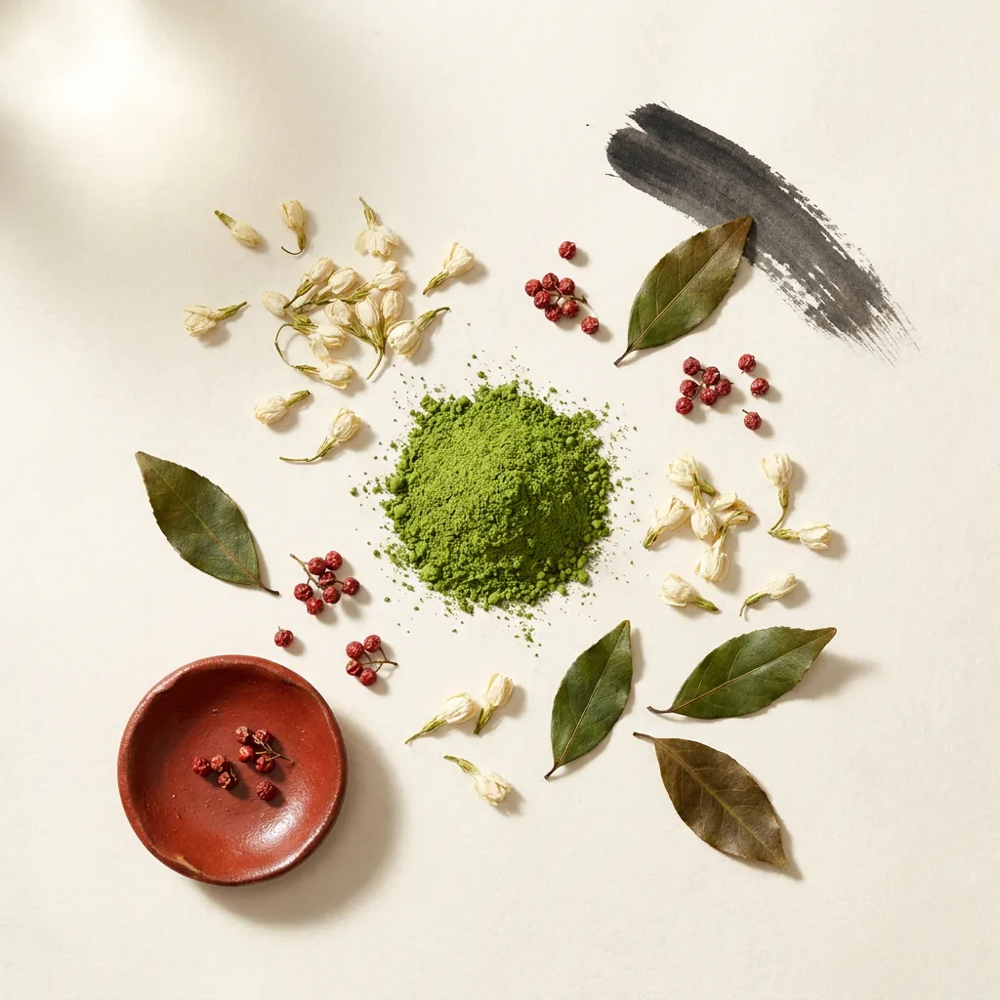

銘柄
どぶろく 抹茶（季節限定）
季節限定／副原料に抹茶

— PRESERVATION
要冷蔵(できたて)
— STRUCTURE 4軸構造スケール
公式の製法・原料・成分の情報に基づく saketto 編集部評価。
週替わりで登場する季節限定のどぶろくのひとつ。米と米麹で仕込んだどぶろくに抹茶を合わせた期間限定品で、過去には黒糖と抹茶を使った限定どぶろくも提供されている。難波の店内醸造で、季節ごとに移ろう一杯を楽しめる。
— PURCHASE
「どぶろく 抹茶（季節限定）」を探す
通販モールでの取り扱いは確認できていません。少量生産のため、蔵の公式オンラインショップや醸造所併設の店舗での販売が中心です。
SOURCES ／ 出典
掲載内容は上記の一次ソースで確認しています。価格・在庫・度数はロットや時期で変わるため、購入時は各販売ページで最新の情報をご確認ください。